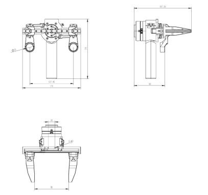
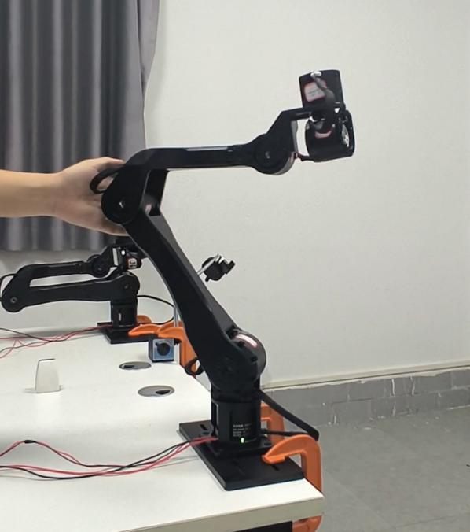

[ AT A GLANCE · 02 ]
From sim to real hardware, without seams.
High-precision motion control, low-power design, and an open hardware-software stack, engineered for research labs, university teaching, and embodied-AI startups.

01 · ARM
6 DOF±0.1 mm

02 · END-EFFECTOR
swap in seconds0–95 mm stroke

03 · GRAVITY COMP
out of the boxteleop by hand
[ HW · 01 ]
All-CNC metal build
Aluminum-alloy housing, durable, lightweight, and rigid enough for hands-on teaching and field deployments.
[ HW · 02 ]
Modular end interface
Quick-swap between gripper, teacher, and 2-in-1 end-effector. Power + CAN through a single XT30 (2+2) connector.
[ HW · 03 ]
±0.1 mm repeatability
Precision suitable for research-grade pick-and-place, contact-rich manipulation, and fine assembly tasks.
[ HW · 04 ]
Ready out of the box
Calibrated, packed, and shipped complete, unbox, plug in, and run your first experiment in minutes.